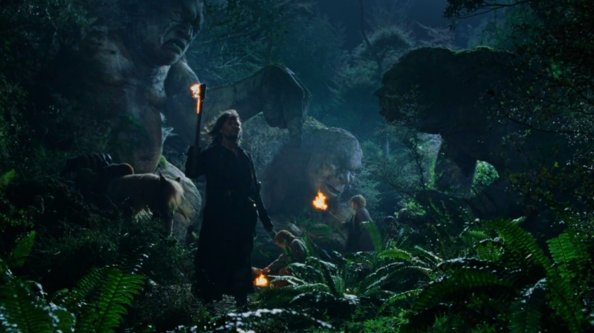

The Birthday Party
Bilbo vanishes
The One Ring
The Departure
Elves in the Forest
Black Rider
Bree
The Prancing Pony
Strider
Amon Sûl
The Black Riders
Black Riders Revealed
Frodo stabbed

Bilbo"s Trolls
Arwen Undómiel
Flight to the Ford
The Ford of Bruinen
Rivendell
Aragorn & Arwen
The council of Elrond
Fellowship of the Ring
Departure from Rivendell
Stones of Hollin
Spies of the Shadow
Pass of Caradhras
Saruman"s intervention
Saruman"s Spell
The Door of Durin
The Tomb of Balin
Surrounded in Darkness
a Balrog of Morgoth
The Bridge of Khazad-dûm
The Grey Pilgrim"s End
Grief in the Wild
The Golden wood
Caras Galadhon
Lothlórien
Dwelling in Lothlórien
Mirror of Galadriel
The Gifts of Galadriel
Legolas
Merry & Pippin
Samwise Gamgee
Gimli
Frodo Baggins

Namárië
The Argonath
Parth Galen
The Fighting Uruk-Hai
Fall of Boromir
Burden of One
Sam"s Loyalty
The Fellowhip behind